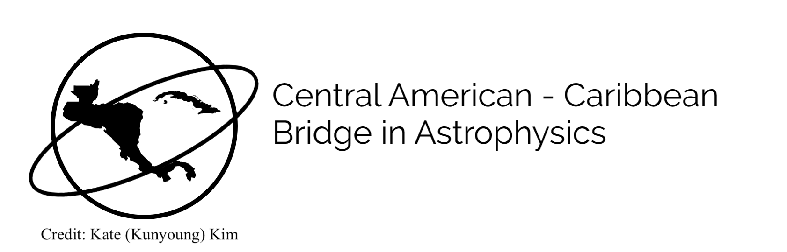
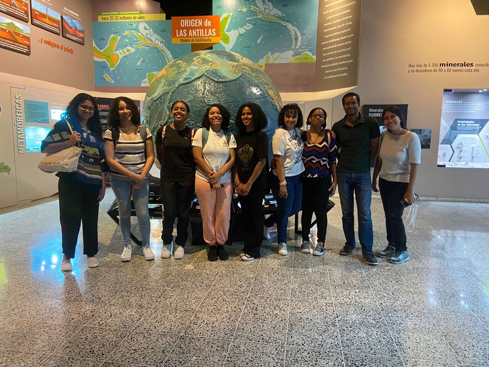
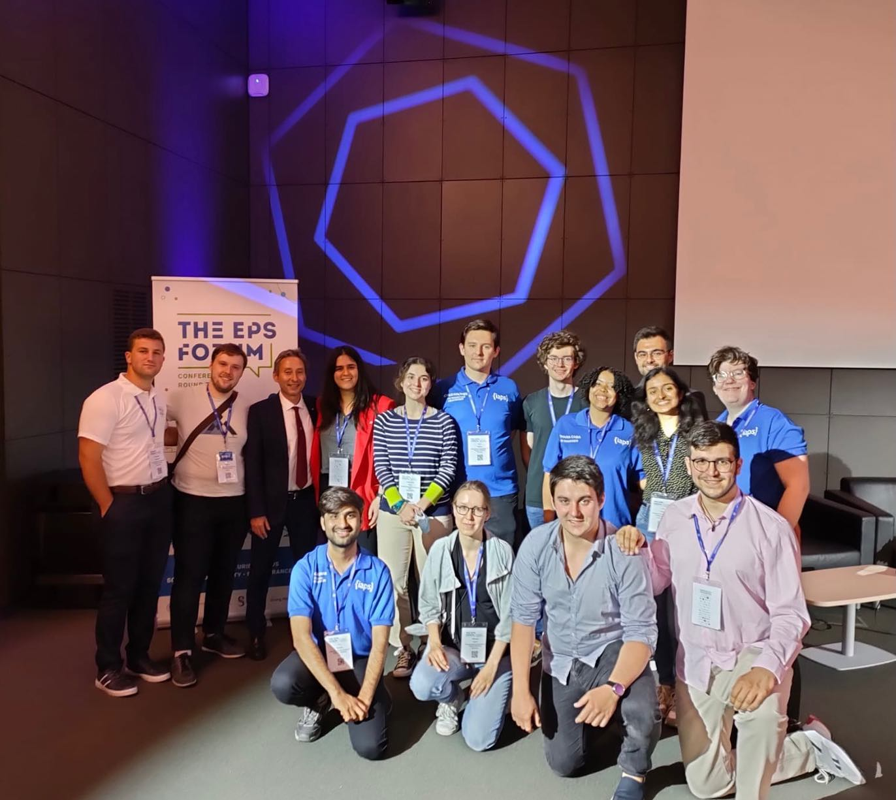

After participating as an intern in the Central American - Caribbean Bridge in Astrophysics Remote research experience for undergraduate students I've mentored two students in their first research experience in astrophysics: Leiany De Oleo Rodríguez, "Investigating the Circumgalactic Medium" and Daniela Azucena Cardona Cuc, "Binarity in young star clusters across the entire mass range". I am currently a student coordinator for the CENCA-Bridge remote internship.

Since 2023 I've been organizing a series of talks and activities spanning a whole month related to astronomy to introduce high school and university students in the Dominican Republic to the world of astronomy. In 2024 I secured funding for two Dominican students to conduct their first research internship in astronomy and to conduct a workshop on astronomical data analysis. Financed by the North American Regional Office of Astronomy for Development, the Heising-Simons Foundation and the International Association of Physics Students.

I was the Editor-in-Chief of the journal of the International Association of Physics Students (IAPS) 2025 edition. Previously, I was part of the executive committee of IAPS from 2021 to 2023 first as PR Manager and later as Secretary. During this time I was a member of the Affiliated Commission 5 which is the student branch of the International Union of Pure and Applied Physics (IUPAP). I managed the relations between IAPS and IUPAP especially relating to communications.